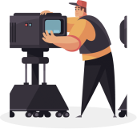

1. Как создают кино
8 сентября 20:00Данила Кузнецов
 18 часов
8 сентябрь
18 часов
8 сентябрь
За 8 занятий станем активными зрителями и разберёмся в кинопроцессе
Зритель для меня не потребитель моей продукции, не судья, а соучастник творчества, соавтор.
Андрей Тарковский
Порой фильмы устроены сложнее четырёхтомных романов. Но читать книги учат со школы, а смотреть кино — нет. При этом без подготовки бывает трудно получить от просмотра удовольствие.
На курсе из 8 занятий научимся быть осознанными зрителями. Познакомимся с этапами кинопроизводства и узнаем, как смотреть кино глазами сценариста, режиссёра и монтажёра. Разберёмся в особенностях жанров и рассмотрим важнейшие картины, от «Гражданина Кейна» до «Матрицы».
8 занятий
Для погружения в кинематограф2 часа
Длительность каждого занятия3 недели
Длительность курсаВебинары
Занятия проходят онлайн в режиме вебинаров с преподавателемДоступ навсегда
Если вы не успели на вебинар, всегда можете посмотреть запись в личном кабинетеОбщение
Вы можете задать вопрос преподавателю на занятии1. Как создают кино
8 сентября 20:002. Взгляд драматурга
10 сентября 20:00
3. Взгляд режиссёра
13 сентября 13:004. Взгляд монтажёра
15 сентября 20:005. Жанры в кино
17 сентября 20:006. Язык кино. Семинар
20 сентября 13:00
7. Взгляд кинокритика
21 сентября 19:008. Осознанный зритель.
Семинар
3900 руб.
Курс подходит и тем, кто начинает «с нуля», и тем, кто хочет упорядочить имеющиеся знания.
Если вы не успели на вебинар, всегда можете посмотреть запись в личном кабинете.
Курс профессионально подготовлен, изложение материала весьма доступное, благодаря прекрасному изложению лекторов и демонстрации примеров. А наличие домашних заданий позволяет закрепить все полученные знания на практике. Теперь другими глазами смотрю фильмы, считываю не только сюжет , но и могу оценить работу режиссера, оператора, монтажера и т.д. Спасибо!
Екатерина Палехова